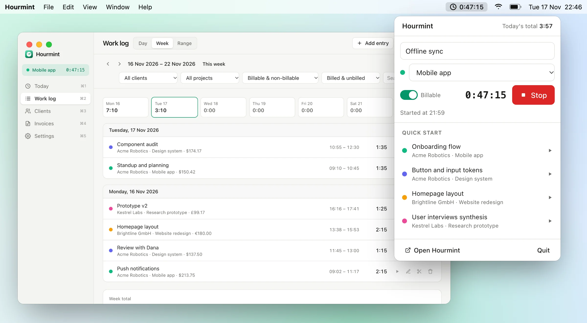
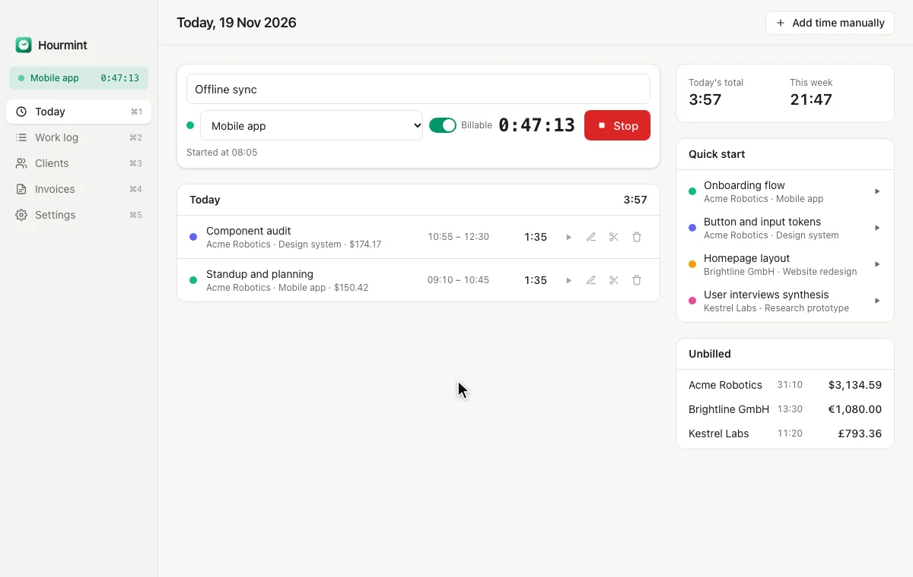
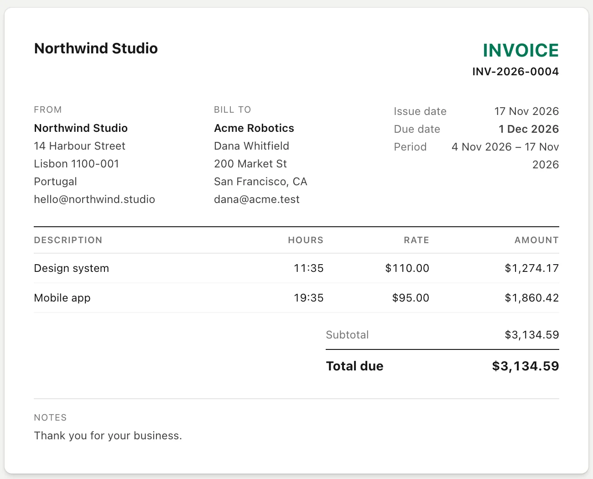

Every hour of client work, on record.
Hourmint is a menu bar time tracker for freelancers. Start a timer, keep an honest log of your client work, and turn it into a PDF invoice with a timesheet your client can check.
No account. No subscription. macOS 13 or later, Apple Silicon and Intel.
Hourmint is a Mac app. Open this page on your Mac to download it.

From timer to invoice in three steps.
No dashboards to set up and no team features to wade through. Just the loop a freelancer runs every month.
Track
Pick a client and project and press Start. The time runs in your menu bar while you work.
Review
See each day and week by client and project. Fix a missed stop, add time by hand or split an entry.
Bill
Choose the unbilled hours. Hourmint builds the invoice, attaches the timesheet and saves the PDF.

Out of your way until you need it.
The running time sits next to your clock. One click opens a small popover to switch tasks, change the description or stop.
- Quick start. Your recent tasks, one click to pick up where you left off.
- Survives everything. Quit, restart or let your Mac sleep. The timer is still right.
- Idle detection. Walk away and Hourmint asks whether to keep or discard that time when you're back.
- Gentle reminders. A nudge if you haven't started by a set time, and a warning when a timer has run for hours.
A timesheet you can stand behind.
Clients trust a timesheet when they can see how it was made. Hourmint labels every entry by where it came from and never hides an edit.
- Timer, Manual or Edited. Every entry shows its source, and you can print it on the timesheet.
- Locked once billed. Hours on an invoice can't be changed, and can't be billed twice.
- Non-billable time. Log it for yourself and keep it off the invoice.
- Day, week and custom views. Totals per client and project, unbilled time at a glance, and CSV export.
An invoice in under a minute.
Pick a client and a period. Hourmint lists the unbilled hours, you untick anything that shouldn't be there, and the PDF is ready with the timesheet attached.
- Grouped your way. One line per entry, per day or per project.
- Rounding, tax and discounts. Round up to 5, 6, 15 or 30 minutes, calculated exactly in your client's currency.
- Rates that stay put. Each client has its own currency and rate. An invoice keeps the rate it was made with.
- Your numbering. Patterns like
INV-{YYYY}-{0001}, and sent, paid and overdue at a glance.
Hourmint makes the PDF. You send it and get paid the way you already do.

Built for one freelancer, not a team.
Most time trackers are cloud services priced by the month. Hourmint makes a different trade-off. Here's what you gain and what you give up.
| Feature | Hourmint | Typical cloud tracker |
|---|---|---|
| Price | Free | Monthly subscription |
| Account | None | Required |
| Your client list | On your Mac | On their servers |
| Usage analytics | None | Usually |
| Works offline | Completely | Partly |
| Source code | Open, MIT | Closed |
| Sync and phone app | No | Yes |
| Team features | No | Yes |
If you need sync, a phone app or a team, a cloud tracker is the better fit. If you work alone on a Mac, Hourmint does the job without a monthly bill.
Your client list is nobody else's business.
Hourmint is local-first. There's no account to create and no server holding your clients, rates or invoices.
On your Mac
Everything lives in one database file in your Library folder, with the last 7 daily backups kept next to it.
Nothing tracked
No analytics, no ads, no profiling. Nothing about you or your clients is ever sent anywhere.
Only for updates
The app checks GitHub for a new version when it starts and every 12 hours. It works fine offline.
Up and running in a minute.
Hourmint isn't notarized by Apple yet, so macOS asks you to confirm the first launch. You only do this once.
Download
Download Hourmint.dmg, open it and drag Hourmint to your Applications folder.
Open once
Open Hourmint. If macOS says it can't verify the developer, go here and click Open Anyway:
System Settings > Privacy & SecurityTrack
Add your first client and press Start. From then on, updates install from inside the app.
Is Hourmint really free?
Yes. It's free and open source under the MIT licence. There's no paid plan, no trial and no ads.
Who is Hourmint for?
Freelancers and contractors who bill clients by the hour and work on a Mac. It's built for one person, so there are no team features.
I forgot to start the timer. Can I add time later?
Yes. Add an entry by hand, or fix the times on an existing one. Hand-added entries are labelled Manual and changed ones Edited, so your timesheet stays honest.
Does Hourmint send invoices or take payments?
No. Hourmint creates the PDF invoice and timesheet. You send them to your client and get paid the way you already do.
Does it sync between Macs or with my phone?
No. Your data stays on one Mac, and there's no phone app. To move to a new Mac, use Settings > Data > Back up to file, then Restore from file on the new Mac.
Is there a Windows or Linux version?
Not yet. Hourmint is Mac only for now. If you'd like another platform, open an issue and say so.
macOS says it can't verify the developer. Is it safe?
Hourmint isn't notarized by Apple yet, so macOS shows this warning the first time. Go to System Settings > Privacy & Security and click Open Anyway. The full source code is on GitHub if you'd like to check it.
How do updates work?
Hourmint checks GitHub for a new version when it starts and every 12 hours. When one is available, you install it from inside the app. A running timer keeps running.
Why is it open source?
So you can see exactly what it does with your data, and so it keeps working for you whatever happens to the project.
Where do I report a bug or ask for a feature?
Open an issue on GitHub. You can also use Report a problem in the app's Settings.
That's how long this page has been open. Hourmint keeps that kind of record of your client work.
Stop rebuilding your week from memory.
Free and open source. No account, no subscription, no cloud.
macOS 13 or later. Apple Silicon and Intel.